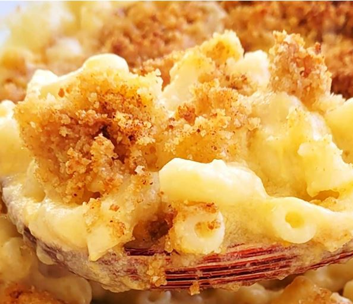

Mac and Cheese
Return to main page

Description
Pasta and cheese. Very tasty very yum.
Ingredients
- Macaroni
- Butter and flour
- Milk
- Cheese
- Seasonings
- Bread Crumbs
Steps
- Boil macaroni and drain the water. Put into baking tray.
- Make the cheese sauce, pour the sauce over the noodles, and stir.
- Make the topping, spread it over macaroni and cheese, and sprinkle with paprika.
- Bake the mac and cheese until the topping is golden brown.